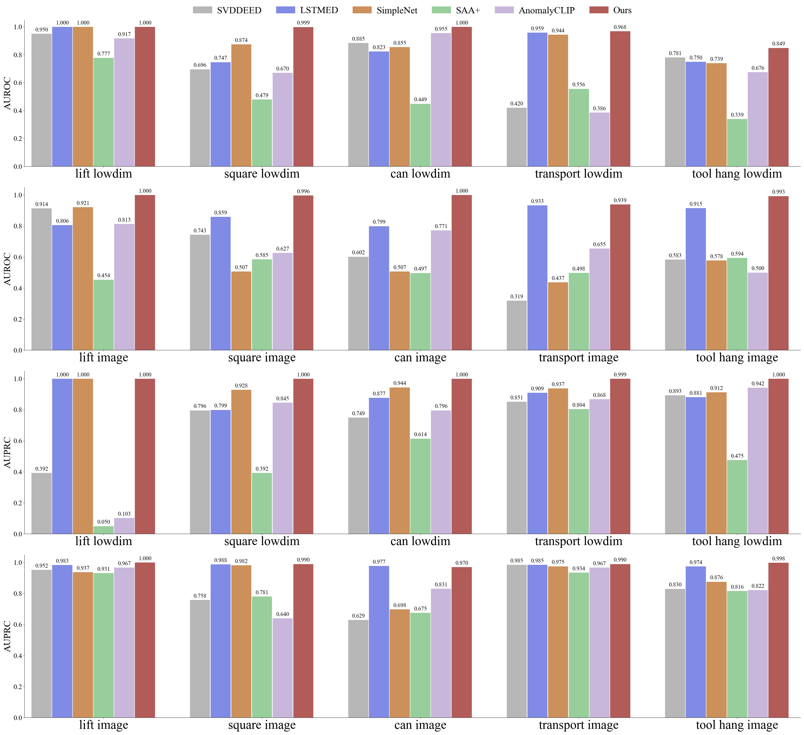
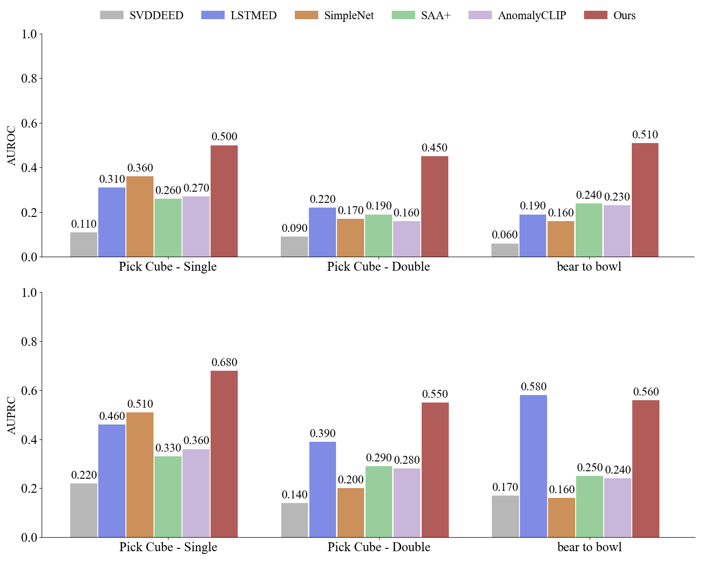

We introduce a method named FailGuard to achieve failure detection for robot visuomotor manipulation policy learning.
Due to the inefficient and potentially hazardous rollout for failure data collection in real world, we collect success trajectories from rollouts of the pre-trained policy and use Gaussian noise for data augmentation. Our model is then trained on the augmented trajectory data pairs.
After trained with the collected data, the failure detector can achieve runtime failure detection and early stop the impending failure, improving the success rate and safety of the robot manipulation.
The experimental results shows that our proposed method outperforms several different kinds of baseline methods in both simulation environment and real world, and can effectively prevent failure cases during manipulation.
Simulation Experiments
AUROC & AUPRC

We evaluate FailGuard's ability to detect OoD occurrence in Robomimic Simuation Benchmark.
Our method achieves optimal results under both metrics across all tasks, significantly outperforming most baselines.
This indicates that our method excels in robotic manipulation failure detection task and demonstrates robustness across different policies.
Real World Experiments

We test OpenVLA in three real world tasks: Pick Cube - Single, Pick Cube - Double, Bear to Bowl.
our method achieves the best results on most tasks, demonstrating our FailGuard can work well in real world, consistent with the results obtained in simulation.
Real Restart Videos
Below are videos of the FailGuard restart experiments (Videos are sped up by _x.)
Pick Cube - Single Success trajectory FailGuard doesn't trigger restart
Pick Cube - Single Manual interference restart after failing to pick cube up
Pick Cube - Single Interference in air When moving in the air after the robot grasps the block, human disturbance causes the block to drop. FailGuard restart the manipulation
Pick Cube - Single Multiple failed restarts Multiple failures trigger restarts and eventually succeed
Pick Cube - Single No Cube restart because no cube on the table
Pick Cube - Single Multiple failed restarts On the first execution, the human interference caused the block to be unclamped and the task failed. FailGuard restarts the task and fails again, causing a new restart. The third attempt was successful